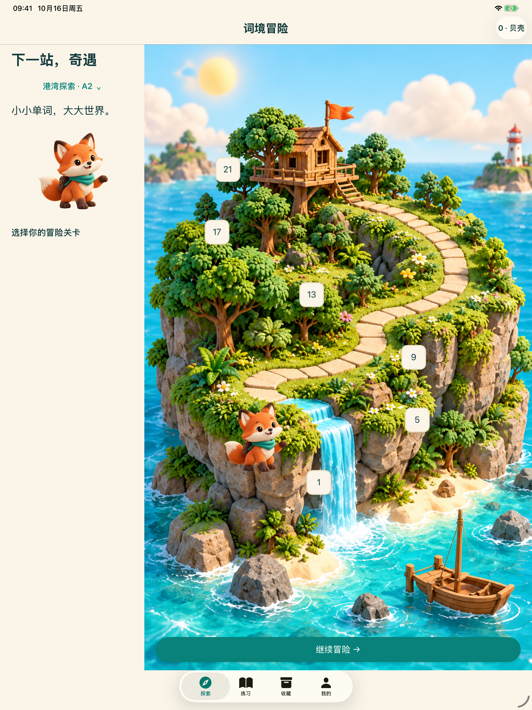
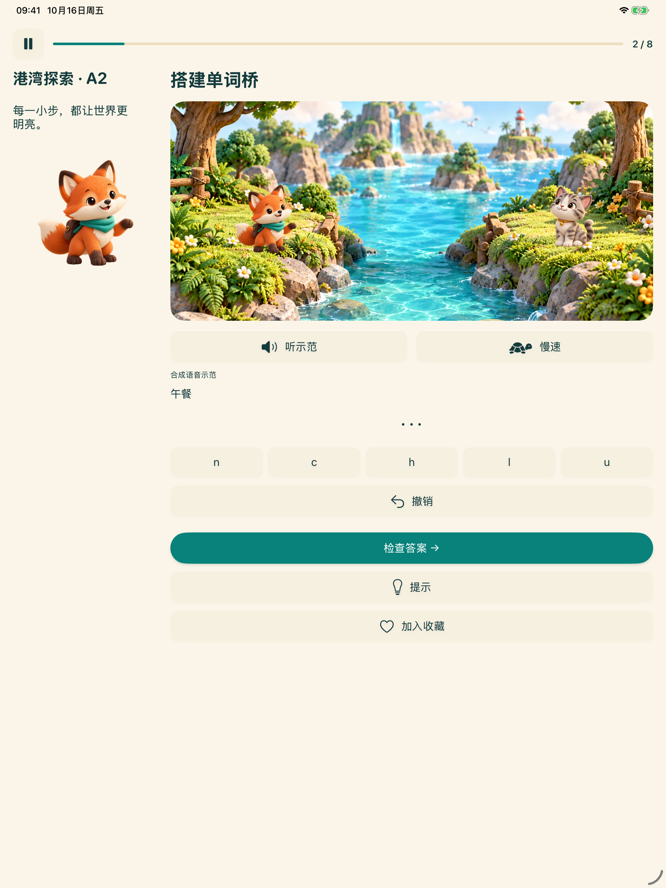
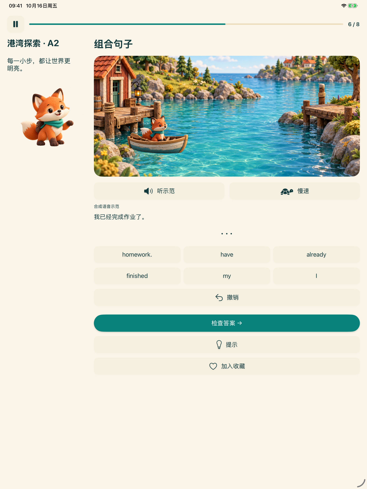
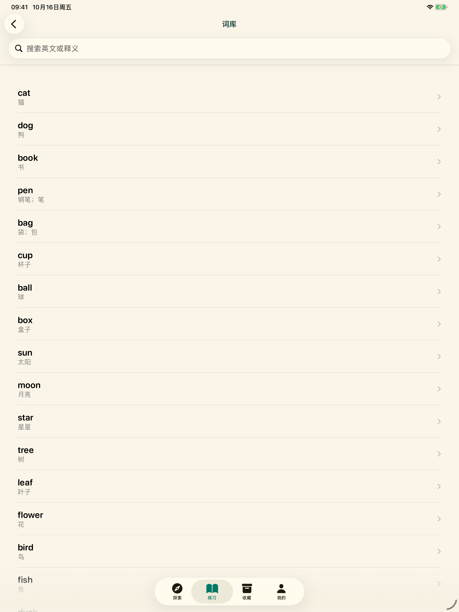

词境冒险
探索
画面预览
帮助与支持
简体中文
English
简体中文
繁體中文
日本語
한국어
Español
Français
Deutsch
Italiano
Português (Brasil)
Русский
العربية
हिन्दी
Bahasa Indonesia
ไทย
Tiếng Việt
走近你的学习小岛
画面来自对应界面语言下的实际应用。英语是学习内容的目标语言。
iPhone
01 — 沿着好奇心，出发
02 — 一个字母，一次发现
03 — 让单词组成句子
04 — 让每个单词，都有新发现
iPad

01 — 沿着好奇心，出发

02 — 一个字母，一次发现

03 — 让单词组成句子

04 — 让每个单词，都有新发现